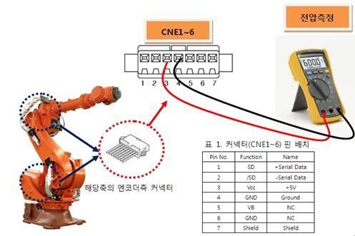
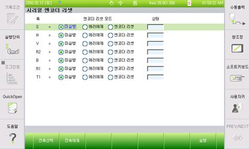
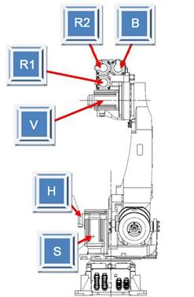

기존 에러코드: E0224 (○축) 엔코더 상태 이상발생
1.1.44.1. 개요
서보보드에서는 모터의 서보제어를 수행하기 위해 엔코더와 시리얼통신을 하여 주기적으로 엔코더 데이터를 수신하는데, 엔코더로부터 수신된 데이터는 정상이나 엔코더 데이터중 엔코더 스스로 내부상태를 감시한 결과가 에러상태(CE)인 경우 에러가 발생합니다.
CE(Counter Error) : 엔코더 주전원 On시, 1회전 Data가 오동작 또는 고장등에 의해 위치 어긋남이 발생하는 경우 발생.
1.1.44.2. 원인 및 점검방법
|
(1) 엔코더 공급전압을 확인하십시오.
(2) 에러해제 후, 주전원 OFF/ON하십시오.
(3) 계속 에러발생시 모터(엔코더)를 교체 시험하십시오.
|
(1) 엔코더 공급전압을 확인하십시오.
엔코더에 공급하는 전원전압은 엔코더측 커넥터 공급 전압이 5V±5%(4.75V ~ 5.25V)범위 내에 있어야 합니다. 엔코더측 커넥터 전압이 4.75V이하로 떨어질 경우, 엔코더가 정상 동작하지 않아, 상기 에러 발생 가능성이 있습니다.
엔코더측 커넥터 pin(3-4)의 전압을 측정해 주십시오.

측정된 전압이 기준전압보다 낮을 경우 서보보드(BD544)의 VR1 볼륨저항을 돌려 엔코더측 커넥터 전압이 기준전압 이내가 되도록 조정하십시오.
(2) 에러해제 후, 주전원 OFF/ON하십시오 .
에러해제 후, 주전원 OFF/ON시 계속 에러가 발생하면 모터(엔코더)교체 시험하십시오.
에러해제는 아래의 메뉴에서 실행합니다.
Ø 시스템
Ø 5. 초기화
Ø 4. 시리얼 엔코더 리셋

(3) 계속 에러발생시 모터(엔코더)를 교체 시험하십시오.
교체한 후 에러가 발생하지 않으면 서보모터의 불량입니다. 서보 모터를 정상품으로 교체하여 주십시오. 아래 그림은 HS165 로봇의 각 축 모터의 위치를 나타내고 있으며, 다른 로봇은 해당 기구 보수설명서를 참고하여 교체하시기 바랍니다.

그림 1.156 HS165 로봇의 각 축 모터 위치